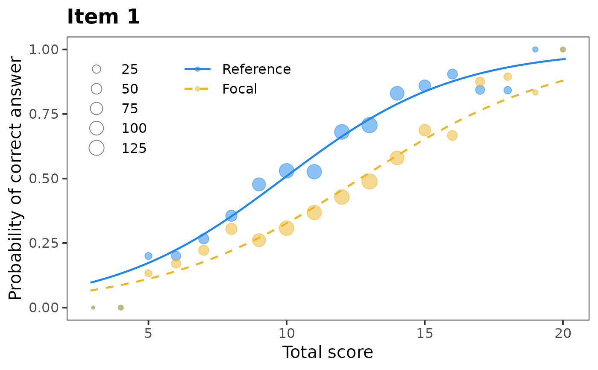
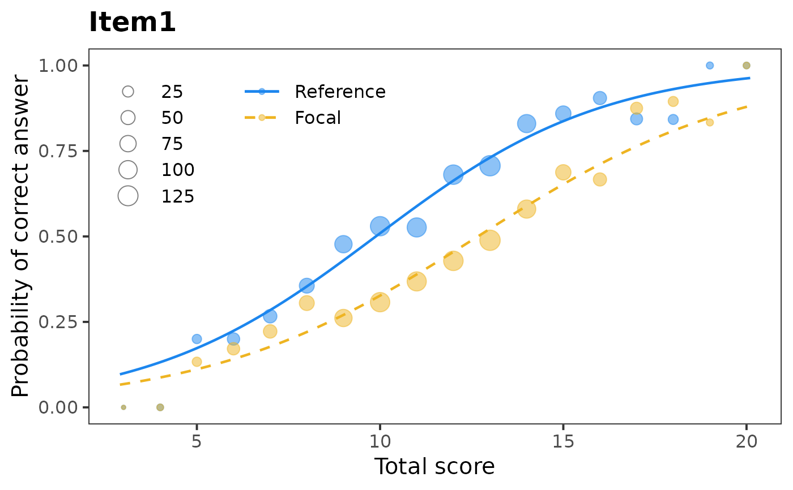
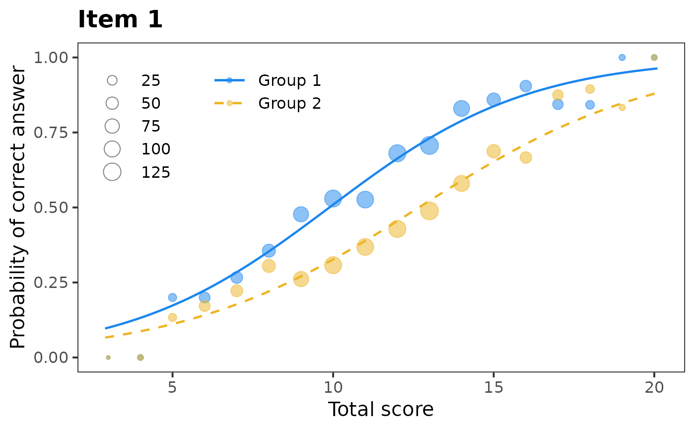
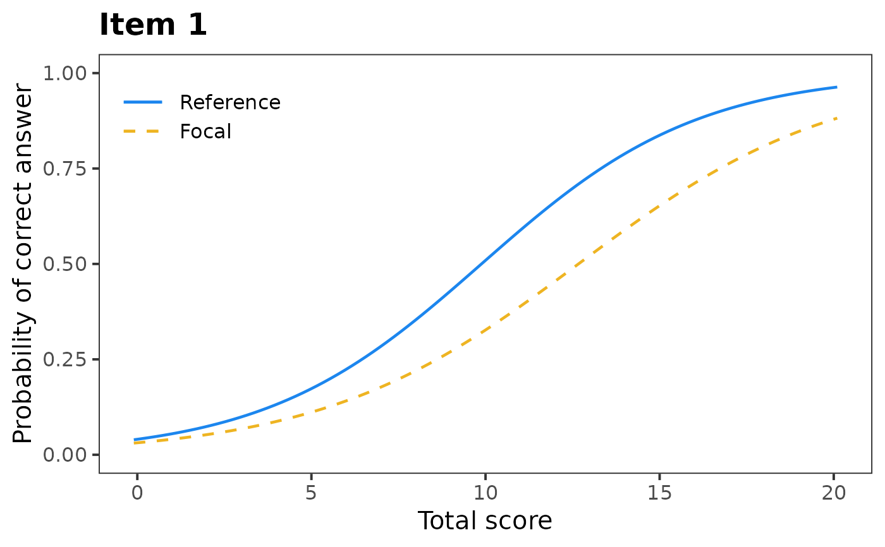

R/plotDIFLogistic.R
plotDIFLogistic.RdPlots characteristic curve of 2PL logistic DIF model
plotDIFLogistic(x, item = 1, item.name, group.names = c("Reference", "Focal"), Data, group, match, draw.empirical = TRUE)
| x | an object of |
|---|---|
| item | numeric: number of item to be plotted |
| item.name | character: the name of item to be used as title of plot. |
| group.names | character: names of reference and focal group. |
| Data | numeric: the data matrix. See Details. |
| group | numeric: the vector of group membership. See Details. |
| match | character or numeric: specifies observed score used for
matching. Can be either |
| draw.empirical | logical: whether empirical probabilities should be
calculated and plotted. Default value is |
This function plots characteristic curves of 2PL logistic DIF model
fitted by difLogistic() function from difR package using ggplot2.
Data and group are used to calculate empirical probabilities
for reference and focal group. match should be the same as in
x$match. In case that an observed score is used as a matching variable
instead of the total score or the standardized score, match needs to
be a numeric vector of the same the same length as the number of observations
in Data.
Adela Hladka
Institute of Computer Science of the Czech Academy of Sciences
hladka@cs.cas.cz
Patricia Martinkova
Institute of Computer Science of the Czech Academy of Sciences
martinkova@cs.cas.cz
# loading libraries library(difR) # loading data based on GMAT data(GMAT, package = "difNLR") Data <- GMAT[, 1:20] group <- GMAT[, 21] # DIF detection using difLogistic() function x <- difLogistic(Data, group, focal.name = 1) # Characteristic curve by logistic regression model plotDIFLogistic(x, item = 1, Data = Data, group = group)# Using name of column as item identifier plotDIFLogistic(x, item = "Item1", Data = Data, group = group)# Renaming reference and focal group plotDIFLogistic(x, item = 1, group.names = c("Group 1", "Group 2"), Data = Data, group = group)# Not plotting empirical probabilities plotDIFLogistic(x, item = 1, draw.empirical = FALSE)